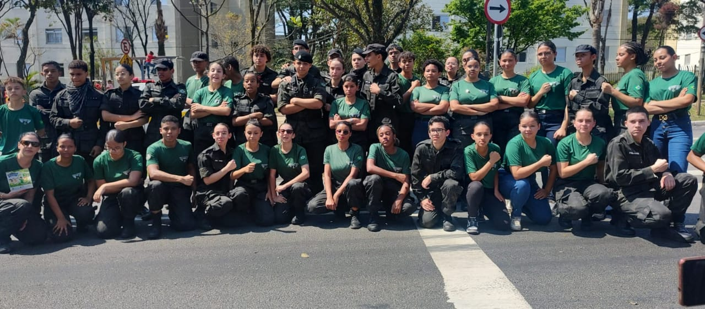
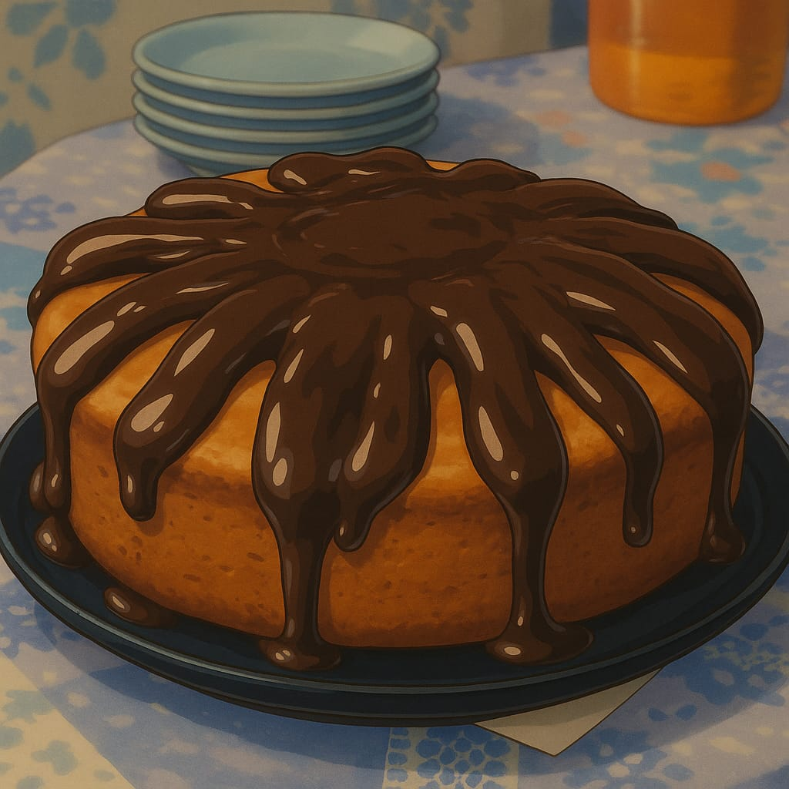
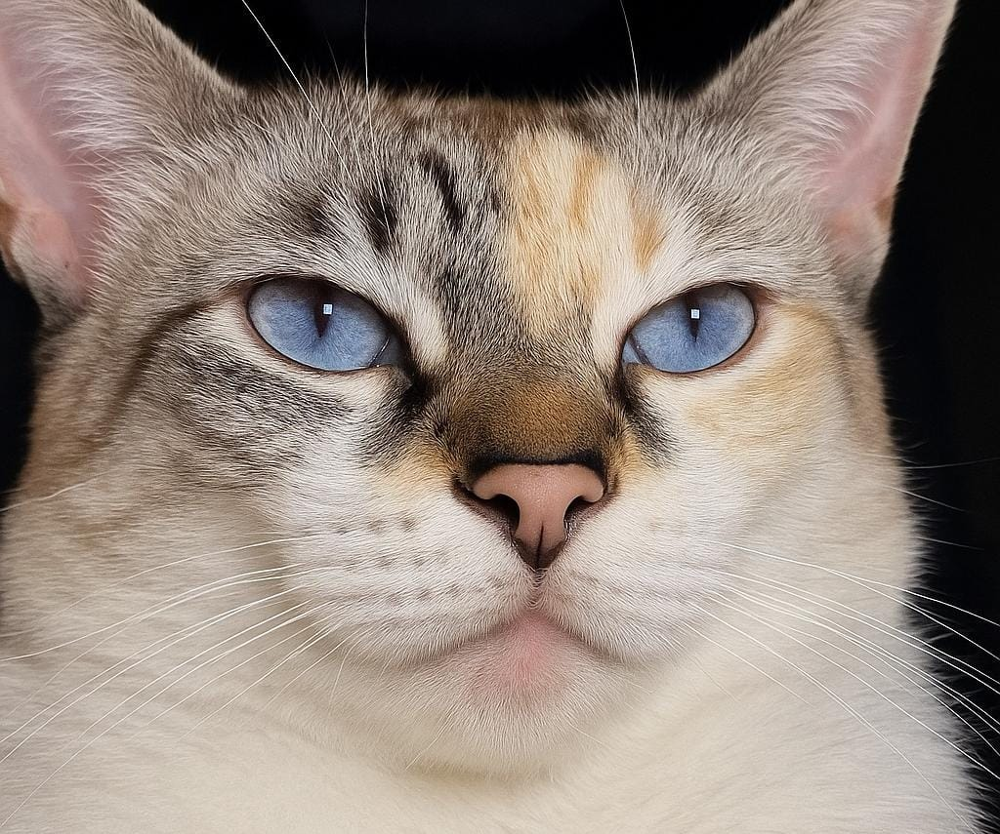

Meus projetos

Inspiração
Quando tinha 13 anos, entrei para um curso que mudou completamente minha vida, o qual foi o IPMIL (instituto padrão militar).

minha vida na confeitaria
Eu, desde pequena, sempre gostei MUITO de doce e daí para frente fui gostando cada vez mais de aprender a fazer os docinhos em vez de comprar, no final isso acabou se tornando um hobby.

Meus companheiros de Quatro Patas
Desde pequena, sou apaixonada por animais, principalmente por felinos. Gatos sempre chamaram minha atenção, mas também gosto muito animais selvagens, como a onças e cobras. Acho fascinante a força e agilidade que esses animais têm